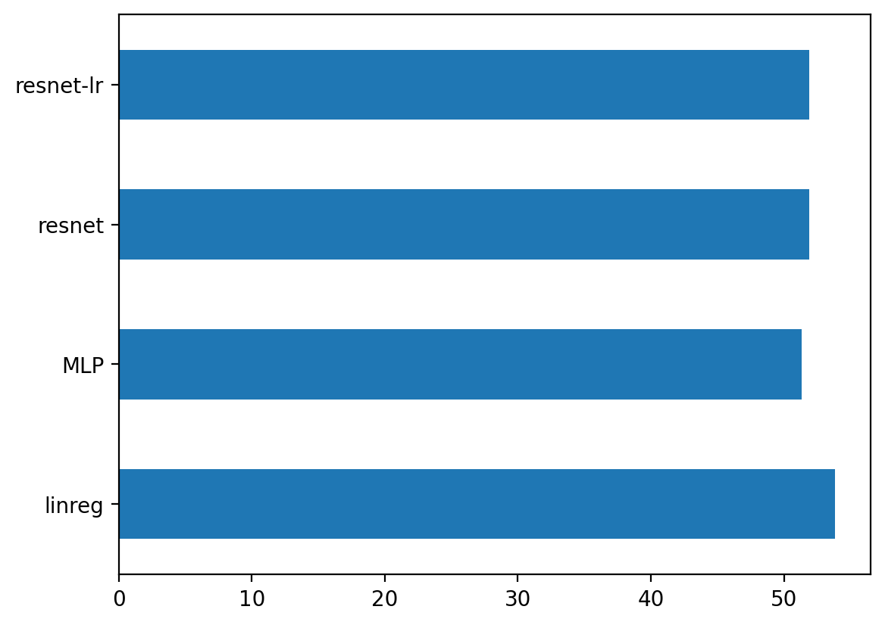

import torch
import torch.nn as nn
import torch.nn.functional as F
import torch.optim as optim
import numpy as np
import matplotlib.pyplot as plt
from torch.utils.data import DataLoader, TensorDataset
%matplotlib inline
%config InlineBackend.figure_format = 'retina'# MNIST dataset
from torchvision import datasets, transforms
import torchvision
# Split MNIST into train, validation, and test sets
train_data = datasets.MNIST(root='data', train=True, download=True, transform=transforms.ToTensor())
test_data = datasets.MNIST(root='data', train=False, download=True, transform=transforms.ToTensor())
# Split train_data into train and validation sets
val_data = torch.utils.data.Subset(train_data, range(50000, 60000))
train_data = torch.utils.data.Subset(train_data, range(0, 50000))
# Create data loaders
batch_size = 64
train_loader = DataLoader(train_data, batch_size=batch_size, shuffle=True)
val_loader = DataLoader(val_data, batch_size=batch_size, shuffle=True)
test_loader = DataLoader(test_data, batch_size=batch_size, shuffle=True)# Add images to tensorboard
from torch.utils.tensorboard import SummaryWriter
# Clear the log directory
!rm -rf runs
# Default `log_dir` is "runs" - we'll be more specific here
writer = SummaryWriter('runs/mnist_experiment_1')
# Add images to tensorboard in the form of a grid in batches of 64
dataiter = iter(DataLoader(train_data, batch_size=64, shuffle=True))
# Add a slider in tensorboard to iterate through the batches
for i in range(10):
images, labels = next(dataiter)
images = torchvision.utils.make_grid(images)
writer.add_image(f'mnist_images', images)# Define model for 10-class MNIST classification
class MNISTClassifier(nn.Module):
def __init__(self):
super().__init__()
self.fc1 = nn.Linear(784, 64)
self.fc2 = nn.Linear(64, 64)
self.fc3 = nn.Linear(64, 10)
def forward(self, x):
x = F.relu(self.fc1(x))
x = F.relu(self.fc2(x))
logits = self.fc3(x)
return logitsimages.shapetorch.Size([64, 1, 28, 28])learning_rate = 0.001
model = MNISTClassifier()
opt = optim.Adam(model.parameters(), lr=learning_rate)
# Define loss function
criterion = nn.CrossEntropyLoss()
# Define training loop
for epoch in range(2):
for i, (images, labels) in enumerate(train_loader):
# Flatten images
images = images.view(-1, 28*28)
# Forward pass
logits = model(images)
loss = criterion(logits, labels)
# Backward pass
loss.backward()
opt.step()
opt.zero_grad()
# Add loss to tensorboard
writer.add_scalar('training loss',
loss.item(),
epoch * len(train_loader) + i)
# Add images and labels to tensorboard
if i % 100 == 0:
images = images.view(-1, 1, 28, 28)
img_grid = torchvision.utils.make_grid(images)
writer.add_image('mnist_images', img_grid)
#writer.add_graph(model, images)
#writer.add_embedding(logits,
# metadata=labels,
# label_img=images)
# Log a histogram of the model parameters
for name, param in model.named_parameters():
writer.add_histogram(name, param, i)
# Evaluate validation accuracy
val_loss = 0
val_accuracy = 0
for images, labels in val_loader:
images = images.view(-1, 28*28)
logits = model(images)
val_loss += criterion(logits, labels)
ps = torch.exp(logits)
top_p, top_class = ps.topk(1, dim=1)
equals = top_class == labels.view(*top_class.shape)
val_accuracy += torch.mean(equals.type(torch.FloatTensor))
# Log validation accuracy
writer.add_scalar('validation loss',
val_loss/len(val_loader),
)
writer.add_scalar('validation accuracy',
val_accuracy/len(val_loader),
)
# Log model parameters
writer.add_hparams({'lr': learning_rate, 'bsize': batch_size},
{'hparam/accuracy': val_accuracy/len(val_loader), 'hparam/loss': loss.item()})# Model 1: Linear regression
class LinearRegression(nn.Module):
def __init__(self, input_dim):
super().__init__()
self.linear = nn.Linear(input_dim, 1)
def forward(self, x):
return self.linear(x)def train(model, optimizer, criterion = nn.MSELoss(), train_loader=None, val_loader=None, epochs=1000):
train_losses = []
val_losses = []
for e in range(epochs):
train_loss = 0
val_loss = 0
model.train()
for batch_x, batch_y in train_loader:
optimizer.zero_grad()
output = model(batch_x)
loss = criterion(output, batch_y)
loss.backward()
optimizer.step()
train_loss += loss.item() * batch_x.size(0)
train_loss /= len(train_loader.dataset)
train_losses.append(train_loss)
model.eval()
with torch.no_grad():
for batch_x, batch_y in val_loader:
output = model(batch_x)
loss = criterion(output, batch_y)
val_loss += loss.item() * batch_x.size(0)
val_loss /= len(val_loader.dataset)
val_losses.append(val_loss)
if (e+1) % 100 == 0:
print(f'Epoch {e+1}/{epochs}, Train Loss: {train_loss:.4f}, Validation Loss: {val_loss:.4f}')
return train_losses, val_lossescriterion = nn.MSELoss()
model = LinearRegression(X_train.shape[1])
optimizer = optim.Adam(model.parameters(), lr=0.1)
train_losses, val_losses = train(model, optimizer, criterion, train_loader, val_loader, epochs=1000)
plt.plot(train_losses, label='Training loss')
plt.plot(val_losses, label='Validation loss')Epoch 100/1000, Train Loss: 10315.2895, Validation Loss: 12724.1896
Epoch 200/1000, Train Loss: 4804.3067, Validation Loss: 5319.9323
Epoch 300/1000, Train Loss: 3715.5066, Validation Loss: 3480.5550
Epoch 400/1000, Train Loss: 3388.3811, Validation Loss: 3083.5462
Epoch 500/1000, Train Loss: 3194.2672, Validation Loss: 2970.7406
Epoch 600/1000, Train Loss: 3075.9221, Validation Loss: 2929.4660
Epoch 700/1000, Train Loss: 3007.6152, Validation Loss: 2911.9031
Epoch 800/1000, Train Loss: 2970.0181, Validation Loss: 2906.4726
Epoch 900/1000, Train Loss: 2948.9850, Validation Loss: 2904.5393
Epoch 1000/1000, Train Loss: 2937.7591, Validation Loss: 2901.6748
# RMSE on test set
def rmse(model, test_loader):
model.eval()
with torch.no_grad():
test_loss = 0
for batch_x, batch_y in test_loader:
output = model(batch_x)
loss = criterion(output, batch_y)
test_loss += loss.item() * batch_x.size(0)
test_loss /= len(test_loader.dataset)
return np.sqrt(test_loss)errors = {}
errors["linreg"] = rmse(model, test_loader)# Model 2: MLP
class MLP(nn.Module):
def __init__(self, input_dim):
super().__init__()
self.fc1 = nn.Linear(input_dim, 32)
self.fc2 = nn.Linear(32, 16)
self.fc3 = nn.Linear(16, 10)
self.fc4 = nn.Linear(10, 1)
def forward(self, x):
x = F.relu(self.fc1(x))
x = F.relu(self.fc2(x))
x = F.relu(self.fc3(x))
return self.fc4(x)mlp = MLP(X_train.shape[1])
optimizer = optim.Adam(mlp.parameters(), lr=0.001)
train_losses, val_losses = train(mlp, optimizer, criterion, train_loader, val_loader, epochs=1500)Epoch 100/1500, Train Loss: 3663.8245, Validation Loss: 3086.0981
Epoch 200/1500, Train Loss: 3077.9123, Validation Loss: 2912.6680
Epoch 300/1500, Train Loss: 2952.4684, Validation Loss: 2906.0980
Epoch 400/1500, Train Loss: 2920.8557, Validation Loss: 2916.5231
Epoch 500/1500, Train Loss: 2908.5543, Validation Loss: 2903.3417
Epoch 600/1500, Train Loss: 2898.7857, Validation Loss: 2920.6625
Epoch 700/1500, Train Loss: 2888.3550, Validation Loss: 2886.4415
Epoch 800/1500, Train Loss: 2874.1253, Validation Loss: 2905.2355
Epoch 900/1500, Train Loss: 2866.0193, Validation Loss: 2915.6193
Epoch 1000/1500, Train Loss: 2858.1495, Validation Loss: 2914.3357
Epoch 1100/1500, Train Loss: 2849.0639, Validation Loss: 2919.2359
Epoch 1200/1500, Train Loss: 2835.6841, Validation Loss: 2927.5912
Epoch 1300/1500, Train Loss: 2814.3485, Validation Loss: 2942.1452
Epoch 1400/1500, Train Loss: 2802.6443, Validation Loss: 2928.9871
Epoch 1500/1500, Train Loss: 2789.4206, Validation Loss: 2943.3993plt.plot(train_losses, label='Train')
plt.plot(val_losses, label='Validation')
errors["MLP"]= rmse(mlp, test_loader)
errors{'linreg': 53.8179193310273, 'MLP': 51.32108141562702}# Model 3: Residual MLP
# Adding a skip connection from input to output
class ResMLP(nn.Module):
def __init__(self, input_dim):
super().__init__()
self.fc1 = nn.Linear(input_dim, 32)
self.fc2 = nn.Linear(32 + input_dim, 16)
self.fc3 = nn.Linear(16 + input_dim, 10)
self.fc4 = nn.Linear(10, 1)
def forward(self, x):
x_inp = x
x = F.relu(self.fc1(x))
# Concatenate input to output of first layer
x = torch.cat((x, x_inp), dim=1)
x = F.relu(self.fc2(x))
# Concatenate input to output of second layer
x = torch.cat((x, x_inp), dim=1)
x = F.relu(self.fc3(x))
return self.fc4(x)res_mlp = ResMLP(X_train.shape[1])
res_mlp(X_train).shapetorch.Size([282, 1])res_mlp = ResMLP(X_train.shape[1])
optimizer = optim.Adam(res_mlp.parameters(), lr=0.001)
train_losses, val_losses = train(res_mlp, optimizer, criterion, train_loader, val_loader, epochs=1500)Epoch 100/1500, Train Loss: 3298.6719, Validation Loss: 2937.0046
Epoch 200/1500, Train Loss: 2958.9598, Validation Loss: 2908.0027
Epoch 300/1500, Train Loss: 2933.4946, Validation Loss: 2915.9148
Epoch 400/1500, Train Loss: 2924.1275, Validation Loss: 2885.2503
Epoch 500/1500, Train Loss: 2918.3424, Validation Loss: 2883.3218
Epoch 600/1500, Train Loss: 2913.7633, Validation Loss: 2891.1281
Epoch 700/1500, Train Loss: 2909.4774, Validation Loss: 2875.5787
Epoch 800/1500, Train Loss: 2906.8811, Validation Loss: 2885.1002
Epoch 900/1500, Train Loss: 2896.1299, Validation Loss: 2894.3401
Epoch 1000/1500, Train Loss: 2881.0517, Validation Loss: 2883.1614
Epoch 1100/1500, Train Loss: 2859.3730, Validation Loss: 2900.0346
Epoch 1200/1500, Train Loss: 2843.1591, Validation Loss: 2892.0867
Epoch 1300/1500, Train Loss: 2825.5589, Validation Loss: 2935.1988
Epoch 1400/1500, Train Loss: 2807.9256, Validation Loss: 2898.6540
Epoch 1500/1500, Train Loss: 2798.3861, Validation Loss: 2901.6544plt.plot(train_losses, label='Train')
plt.plot(val_losses, label='Validation')
errors["resnet"] = rmse(res_mlp, test_loader)
errors{'linreg': 53.8179193310273,
'MLP': 51.32108141562702,
'resnet': 51.87944353261233}# Adding LR scheduler
def train(model, optimizer, criterion=nn.MSELoss(), epochs=1000, lr_scheduler=None):
train_losses = []
val_losses = []
for e in range(epochs):
# Training loop
train_loss = 0
model.train() # set the model to training mode
for X_train_batch, y_train_batch in train_loader:
optimizer.zero_grad()
y_train_pred = model(X_train_batch)
loss = criterion(y_train_pred, y_train_batch)
loss.backward()
optimizer.step()
train_loss += loss.item()
train_losses.append(train_loss / len(train_loader))
# Validation loop
val_loss = 0
model.eval() # set the model to evaluation mode
with torch.no_grad():
for X_val_batch, y_val_batch in val_loader:
y_val_pred = model(X_val_batch)
loss = criterion(y_val_pred, y_val_batch)
val_loss += loss.item()
val_losses.append(val_loss / len(val_loader))
# Update learning rate
if lr_scheduler is not None:
lr_scheduler.step(val_losses[-1])
# Print progress
if e % 100 == 0:
print(f"Epoch {e}, Train Loss: {train_losses[-1]:.4f}, Val Loss: {val_losses[-1]:.4f}")
return train_losses, val_losses# Use a LRPlateau scheduler to reduce the learning rate when the validation loss stops improving
from torch.optim.lr_scheduler import ReduceLROnPlateau
res_mlp = ResMLP(X_train.shape[1])
optimizer = optim.Adam(res_mlp.parameters(), lr=0.01)
lr_scheduler = ReduceLROnPlateau(optimizer, mode='min', factor=0.5, patience=50, verbose=True)
train_losses, val_losses = train(res_mlp, optimizer, criterion, epochs=1500, lr_scheduler=lr_scheduler)Epoch 0, Train Loss: 28639.6855, Val Loss: 33158.0742
Epoch 100, Train Loss: 2911.0527, Val Loss: 2420.7449
Epoch 00141: reducing learning rate of group 0 to 5.0000e-03.
Epoch 00192: reducing learning rate of group 0 to 2.5000e-03.
Epoch 200, Train Loss: 2815.0154, Val Loss: 2422.1171
Epoch 00243: reducing learning rate of group 0 to 1.2500e-03.
Epoch 00294: reducing learning rate of group 0 to 6.2500e-04.
Epoch 300, Train Loss: 2783.4652, Val Loss: 2429.3894
Epoch 00345: reducing learning rate of group 0 to 3.1250e-04.
Epoch 00396: reducing learning rate of group 0 to 1.5625e-04.
Epoch 400, Train Loss: 2794.7555, Val Loss: 2432.0923
Epoch 00447: reducing learning rate of group 0 to 7.8125e-05.
Epoch 00498: reducing learning rate of group 0 to 3.9063e-05.
Epoch 500, Train Loss: 2799.6670, Val Loss: 2432.4159
Epoch 00549: reducing learning rate of group 0 to 1.9531e-05.
Epoch 00600: reducing learning rate of group 0 to 9.7656e-06.
Epoch 600, Train Loss: 2773.7532, Val Loss: 2431.9507
Epoch 00651: reducing learning rate of group 0 to 4.8828e-06.
Epoch 700, Train Loss: 2789.9358, Val Loss: 2431.6210
Epoch 00702: reducing learning rate of group 0 to 2.4414e-06.
Epoch 00753: reducing learning rate of group 0 to 1.2207e-06.
Epoch 800, Train Loss: 2809.1560, Val Loss: 2431.6233
Epoch 00804: reducing learning rate of group 0 to 6.1035e-07.
Epoch 00855: reducing learning rate of group 0 to 3.0518e-07.
Epoch 900, Train Loss: 2825.4572, Val Loss: 2431.6108
Epoch 00906: reducing learning rate of group 0 to 1.5259e-07.
Epoch 00957: reducing learning rate of group 0 to 7.6294e-08.
Epoch 1000, Train Loss: 2780.1241, Val Loss: 2431.6187
Epoch 01008: reducing learning rate of group 0 to 3.8147e-08.
Epoch 01059: reducing learning rate of group 0 to 1.9073e-08.
Epoch 1100, Train Loss: 2789.0557, Val Loss: 2431.6189
Epoch 1200, Train Loss: 2816.7811, Val Loss: 2431.6187
Epoch 1300, Train Loss: 2810.0122, Val Loss: 2431.6189
Epoch 1400, Train Loss: 2782.1095, Val Loss: 2431.6191plt.plot(train_losses, label='Train')
plt.plot(val_losses, label='Validation')
errors["resnet-lr"] = rmse(res_mlp, test_loader)import pandas as pd
pd.Series(errors).plot.barh()